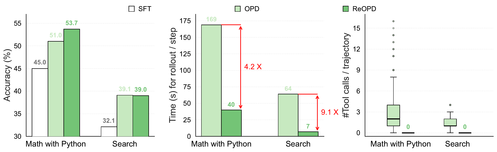
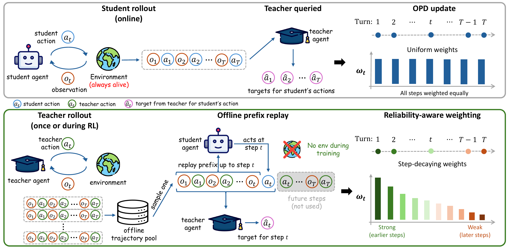
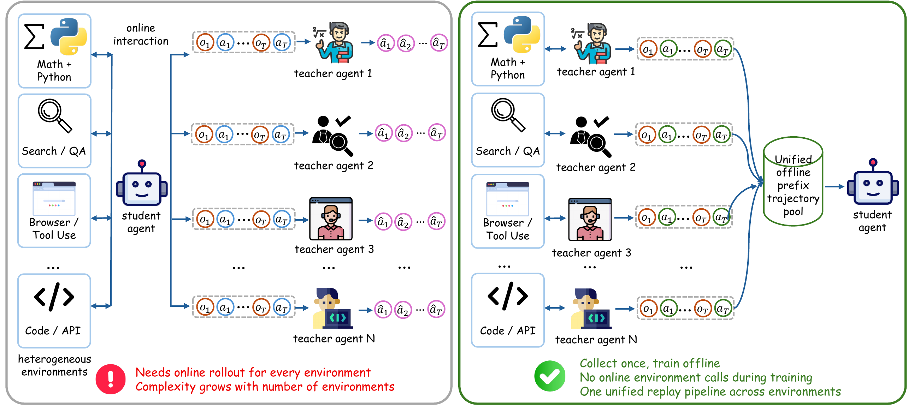
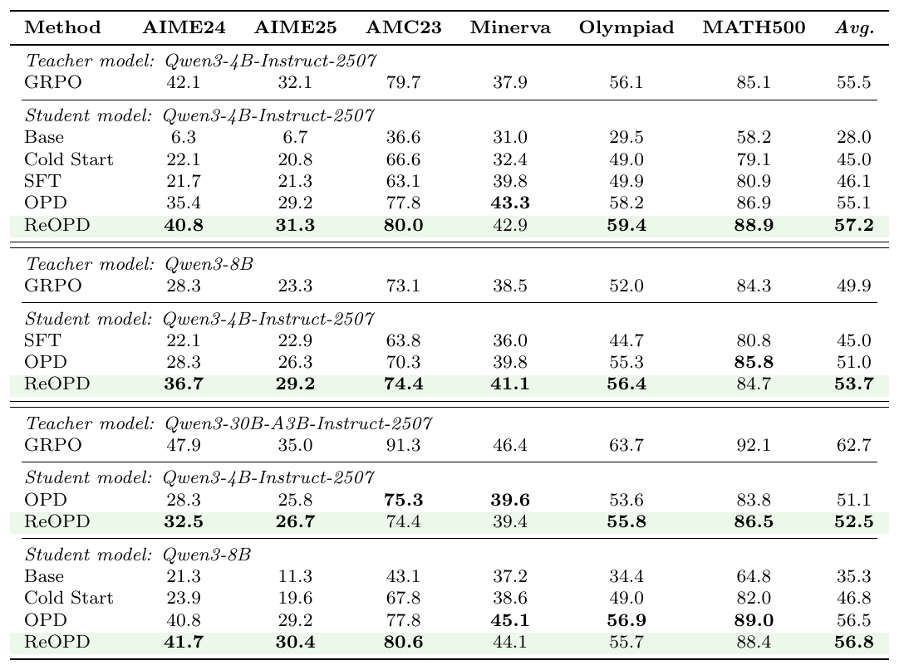
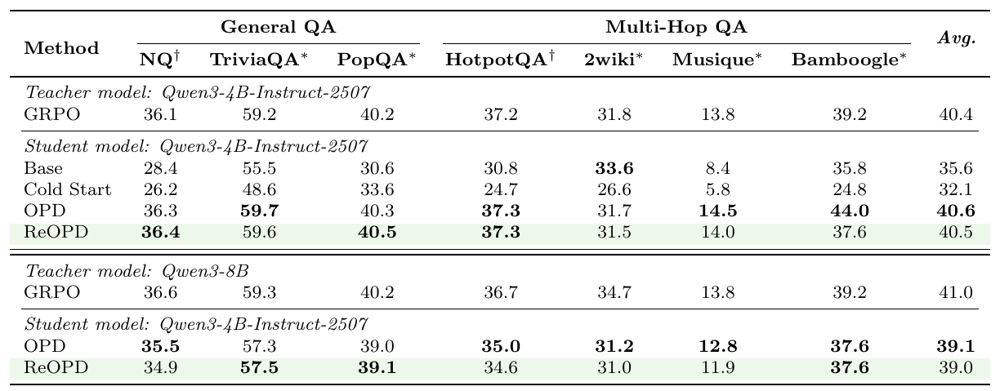
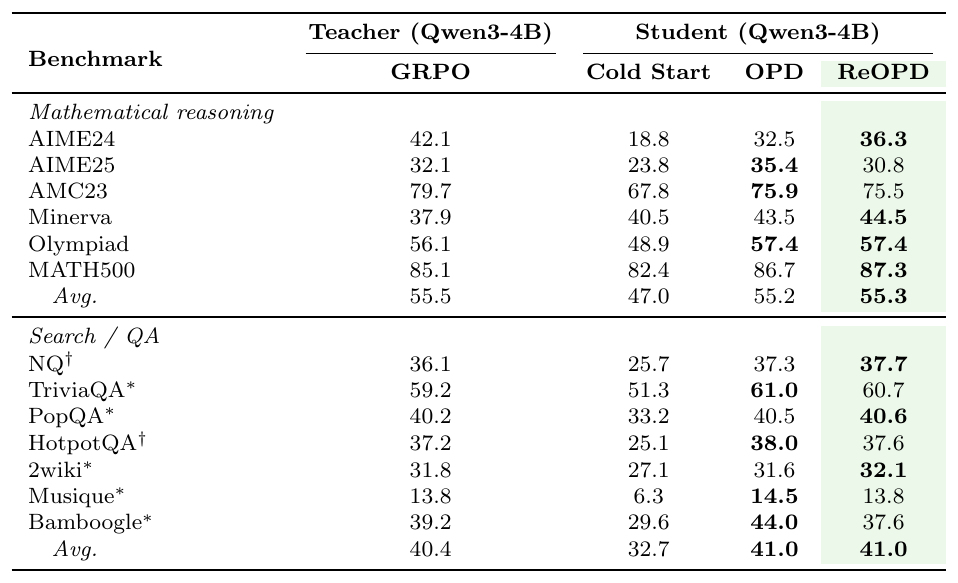
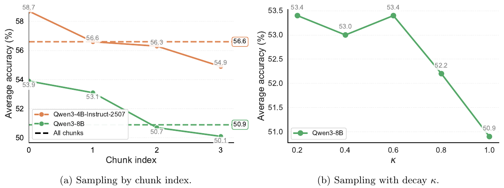

1Microsoft Research 2University of Amsterdam
*Equal contribution †Work done during an internship at Microsoft

We study on-policy distillation (OPD) for agentic tasks, where an LLM agent interacts with an environment over multiple turns and a student imitates a teacher over these multi-turn interaction histories. Fully online OPD is costly because each update requires fresh student rollouts through the environment and teacher queries at visited histories. We propose Replayed-Prefix On-Policy Distillation (ReOPD), an off-environment alternative that reuses pre-collected teacher trajectories as replayed prefixes: the student acts at selected steps, while the teacher provides dense per-step supervision without executing new environment interactions. We show that multi-turn OPD introduces a prefix trap: making histories more student-on-policy improves relevance to the student, but can query the teacher on histories where its target is unreliable. This creates a two-sided distribution shift between student occupancy and teacher reliability. ReOPD addresses this by treating multi-turn OPD as a reliability-aware prefix distribution design and implements it with a simple step-decaying sampling schedule that emphasizes early, lower-shift prefixes. Across mathematical reasoning with Python and search environments over multiple teacher and student model scales, ReOPD preserves or improves OPD-level accuracy, uses zero tool calls during student training, and is at least 4× faster per rollout than OPD. ReOPD therefore turns expensive agent-environment interaction into a reusable offline resource, enabling scalable distillation across tools, tasks, and environments.
On-policy distillation for agents without the environment: replay teacher prefixes instead of live rollouts.
Online OPD (top) keeps the environment alive during the whole training run: every update re-rolls the student through the environment and queries the teacher at each visited history. ReOPD (bottom) replays a teacher-forced prefix from an offline trajectory pool — collected for free while the teacher is trained with RL — and lets the student act only at the supervised step, where the teacher's per-token conditional is the distillation target. No action is ever executed against the environment.

Removing the environment does not remove the temporal structure of multi-turn learning. We identify a prefix trap with a two-sided distribution shift: fully student-on-policy prefixes are relevant to the student but can query the teacher where it is unreliable, while teacher-forced prefixes are reliable but less relevant. ReOPD balances the two with a reliability-aware step-decay schedule: supervised positions are sampled with probability pt ∝ κt (κ = 0.6), concentrating supervision on early, low-shift prefixes. The decay is applied purely at data-processing time, so the training loss itself stays unchanged.




The results confirm the two regimes predicted by our analysis: ReOPD yields its largest gains when the teacher–student gap is wide (math, e.g. AIME24 28.3 → 36.7 under the Qwen3-8B teacher) and essentially matches student-on-policy OPD when the teacher stays reliable on student-induced histories (search). A single fixed κ = 0.6 obtains the regime-appropriate behavior across tasks.

@misc{liao2026reopd,
title={Multi-Turn On-Policy Distillation with Prefix Replay},
author={Baohao Liao and Hanze Dong and Xinxing Xu and Li Dong and Christof Monz and Furu Wei},
year={2026},
eprint={2607.04763},
archivePrefix={arXiv},
primaryClass={cs.LG},
url={https://arxiv.org/abs/2607.04763},
}